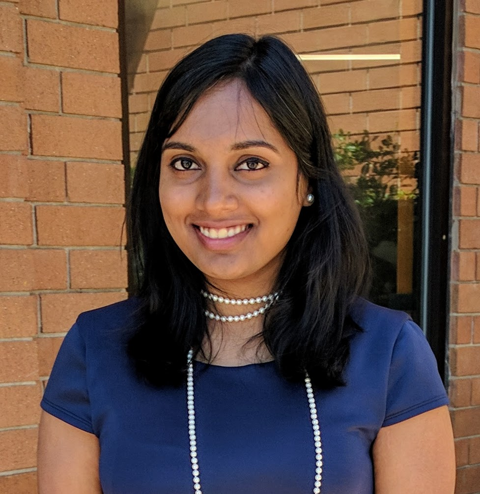

LinkedIn |
Github |
CV
Email:
monal.narasimhamurthy@colorado.edu
Hi! I'm a PhD student at the University of Colorado Boulder in the Department of Computer Science and a member of the CU Programming Languages and Verification group. I'm advised by Prof. Sriram Sankaranarayanan (since Spring 2019).
I'm interested in modeling autonomous systems for control and verification using data-driven techniques.
I received my Masters degree in Computer Science from the University of Colorado Boulder in 2017. I was advised by Prof. Matthew Hammer and we worked on extending Adapton, an incremental computation framework.
I obtained my Bachelors degree in Computer Science from Birla Institute of Technology and Science, Pilani (Goa) in 2014.